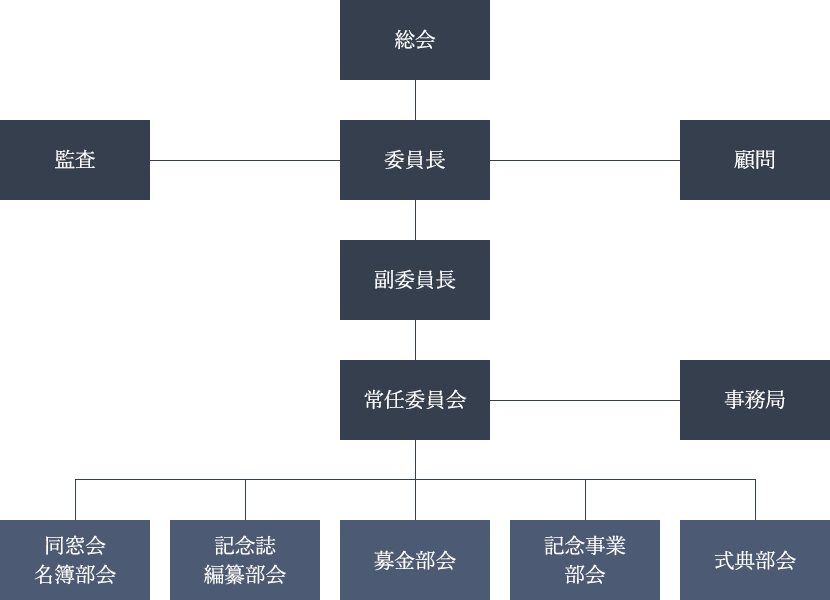

福島県立白河高等学校
創立100周年記念事業
2022年に創立100周年を迎えます
記念事業寄附金のお願い
謹啓 皆様にはご健勝にてお過ごしのこととお喜び申し上げます｡
平素より福島県立白河高等学校(旧福島県立白河中学校)の教育活動にご高配とご指導を賜り心より御礼申し上げます｡
さて､本校は大正11年(1922年)に福島県立白河中学校として開校以来､幾多の変遷を経ながら､令和4年(2022年)に創立100周年を迎えます｡
つきましては､創立100年にあたり実行委員会を組織し､記念事業を推進することといたしました｡
なにぶん多額の経費を要する事業でありますので､同窓生のみならず､広く関係各位のご支援を仰ぎながら推進していく所存です｡なにとぞ趣意をご賢察いただきまして､本事業達成のため格別のご協賛を賜りますようお願い申し上げます｡
謹白
お知らせ
ご挨拶
白河高校の創立１００周年と、次の１００年に向けて
本校は、大正十一年に多くの市民の要望に応え、県内七番目の県立白河中学校の創立以来、２０２２年には創立１００周年を迎えます。
この間、白河中学から白河高校へ、科の再編、更には男女共学化などの変遷を辿りながら、一貫して「質実剛健」「登龍魂」の校風の基、母校を巣立った卒業生は２万５千人に達しようとしており、我が国のみならず世界の各方面で活躍するに至っていることは、大きな誇りとするところです。
その１００周年をお祝いし、顕彰すべく学校当局と保護者と教師の会、白河高校後援会､白河高校同窓会(の4団体)と共に実行委員会を設立いたしました。
新型コロナウイルスの影響で、一時的に設立総会を延期致しましたが、この度晴れて設立をすることが出来ました。激しく変化する教育環境に対応すべく教育環境の整備、更には１００年を顕彰し、次なる１００年に向かっていけるようにしてまいります。
つきましては、皆様方に趣旨ご理解の上、ぜひとも格段のご協力を賜りますようお願い申し上げます。
令和2年9月吉日
福島県立白河高等学校創立100周年記念事業実行委員会
実行委員長 鈴木 雅文
実行委員会組織図

スケジュール
創立100周年記念事業の取り組みについて
令和元年度(2019年)
- 創立100周年記念事業実行委員会の細案を検討
- 創立100周年記念誌(百年史)編纂作業の準備開始
- 記念講演講師への講演依頼
- 新同窓生名簿の完成
令和2年度(2020年)
- 創立100周年記念事業実行委員会設立
- 各部会の設置､活動計画の作成
- 募金活動に関する連絡開始
令和3年度(2021年)
- 各部会の活動推進
- 式典及び祝賀会の準備
令和4年度(2022年)
- 創立100周年記念式典開催
- 記念事業実施
- 記念誌刊行
予算について
支出総額 115,000,000円 / 差し引き残額 0円
- 収入
-
協賛金 15,000,000円 建築工事寄付金 100,000,000円 合計 115,000,000円 - 支出
-
総務費 10,000,000円 顕彰費 1,500,000円 記念事業費 87,500,000円 記念式典費 2,000,000円 記念行事費 3,000,000円 記念祝賀費 1,000,000円 記念誌費 10,000,000円 合計 115,000,000円
記念事業について
記念事業の詳細については決まり次第お知らせいたします｡
同窓会名簿部会
創立100周年記念版同窓会名簿を発行し、お申し込みをいただきました会員に対し発送を行う予定です｡
記念誌編纂部会
在校生･同窓生･地域住民その他白河高校関係者が､創立100年の白河高校に誇り･愛着･希望･夢などが持てるようなものとし､日本の国あるいは福島県､および白河高校の学区である県南地方の100年の歴史の中で､白河高校(白河中学も含む)が現在までどのように歩んできたかを分析しながら､時代背景を考慮しつつ､客観的･公平公正な視点でビジュアル的な内容も加味し編集する｡
募金部会
募金部会では､幅広く募金活動を展開する｡ ただし､新型コロナウイルス感染症の影響により募金の開始時期は後日発表する｡
目標金額:100,000,000円
記念事業部会
記念事業は､100周年実行委員会準備会の中で､教職員･生徒のアンケート結果を検討した結果､ 登龍会館の大規模改修及びマイクロバスのリースが記念事業に選定される｡
メイン事業は登龍会館の改修とする｡
式典部会
2021年にはプレ100周年事業を検討中｡ 講演会の講師は現在選定中｡